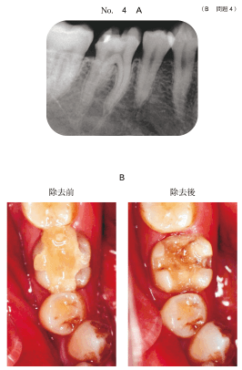
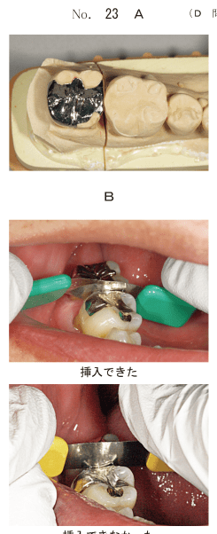
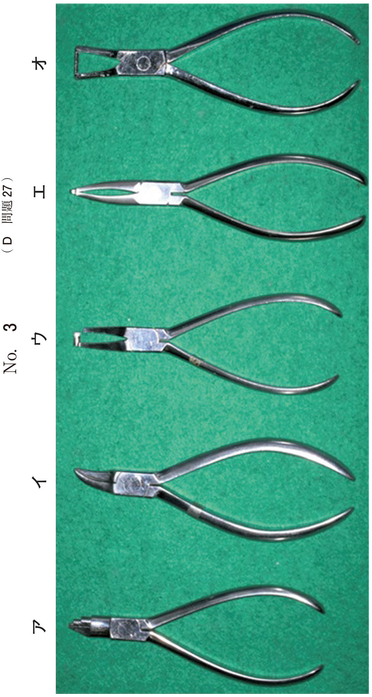

金属を鋳造して製作するインレー。強度と精度に優れ、臼歯部の修復に広く用いられる。
| 長所 | 短所 |
|---|---|
|
|
接触点の調整後、以下の順序で研磨を行う。
| 順序 | 器具 | 目的 |
|---|---|---|
| 1 | カーボランダムポイント | 形態修正、粗い切削痕の除去 |
| 2 | ホワイトポイント | 裂溝部の修正、微細な形態修正 |
| 3 | ペーパーコーン | 切削痕の除去、平滑化 |
| 4 | シリコーンポイント | 研磨 |
| 5 | フェルトコーン＋酸化クロム | つや出し研磨 |
コンタクトゲージで接触状態を確認した後、接触点部はシリコーンポイントで研磨する。カーボランダムポイントやスチールバーは削り過ぎるため不適。
近年は接着性レジンセメントを用いることで、保持形態に依存せず接着力で維持できる。
| 処理 | 対象 | 内容 |
|---|---|---|
| 硫黄系機能性モノマー処理 | 金属 | MDP、VTDなどで金属表面を処理 |
| シランカップリング処理 | セラミック、レジン | 金属には不要 |
| 咬合調整 | 修復物 | 装着前に行う |
| 辺縁のすり合わせ | 修復物 | 適合性向上 |
| 欠陥 | 原因 | 対策 |
|---|---|---|
| 鋳込み不足・なめられ | 合金の融解不足、鋳造圧不足、鋳型の通気性不良 | スプルー線を太くする、通気性の良好な埋没材 |
| 引け巣 | 局所に集中した鋳造収縮 | 湯だまりの付与、スプルー線を太くする |
| ブローホール | 合金融解時のガス吸収と凝固時の放出 | 短時間での融解、フラックスの併用 |
| 鋳バリ | 急加熱や早期加熱による埋没材のヒビ割れ | 急加熱や早期加熱を避ける |
| キャストパール | ワックスパターンに付着した気泡 | 真空練和機の使用、埋没材の確実な脱泡 |
35歳の男性。下顎右側第一大臼歯の違和感を主訴として来院した。2週前に齲蝕の治療を受け、その数日後から自覚しているという。下顎右側第一大臼歯はレジン系仮封材で充填されており、間欠的な咬合痛と冷水痛とがある。歯髄電気診に反応する。仮封材除去前のエックス線写真（別冊No.4A）と仮封材除去前後の口腔内写真（別冊No.4B）とを別に示す。適切な処置はどれか。1つ選べ。

【解説】2級窩洞で歯髄電気診に反応しており歯髄は生活している。窩洞の大きさからメタルインレー修復が適切。GI修復は2級窩洞には適応外（乳歯を除く）。
55歳の男性。下顎右側第二大臼歯の修復物脱離を主訴として来院した。メタルインレー修復を行うこととした。完成したインレー体の写真（別冊No.23A）と数回接触点を調整したあとにコンタクトゲージを用いて検査している口腔内写真（別冊No.23B）とを別に示す。この後、インレー体の隣接面接触点部に使用する器具はどれか。1つ選べ。

【解説】コンタクト調整後の接触点部にはシリコーンポイントで研磨を行う。スチールバー・カーバイドバー・カーボランダムポイントは切削力が強く削りすぎる。ホワイトポイントは裂溝部の修正用。
50歳の男性。上顎左側第一大臼歯の修復物脱離を主訴として来院した。15年前に修復治療を受けたという。診断をした結果、修復物を新製し、接着性レジンセメントで装着することとした。完成した修復物の写真（別冊No.7）を別に示す。この後、修復物装着前に行うのはどれか。3つ選べ。

【解説】メタルインレーを接着性レジンセメントで装着する場合、装着前に咬合調整、辺縁のすり合わせ、硫黄系機能性モノマー処理（金属接着）を行う。シラン処理は金属には不要（セラミック・レジン用）。レジンコーティングは窩洞形成後に行う操作であり、装着前には行わない。